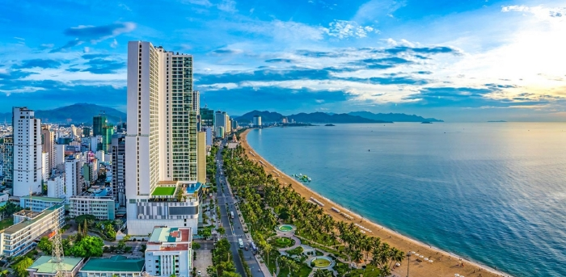
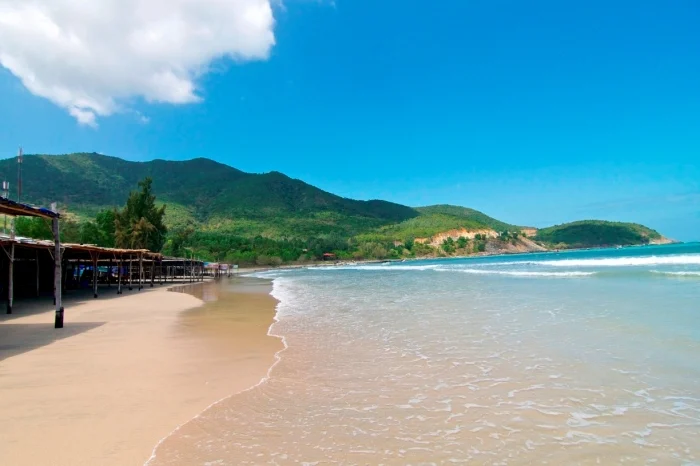
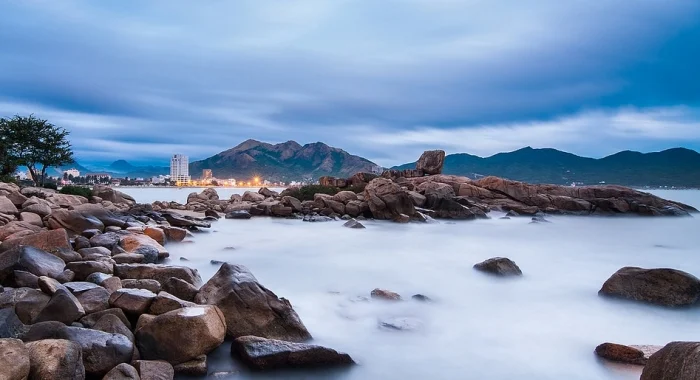

VĂN HIẾN TRAVEL
Cùng bạn khám phá những hành trình tuyệt vời
Top 5 bãi biển đẹp ở Nha Trang
Nha Trang được mệnh danh là "thành phố biển" với đường bờ biển dài, cát trắng mịn và làn nước xanh trong. Mỗi bãi biển nơi đây mang một vẻ đẹp riêng, từ nhộn nhịp trung tâm đến hoang sơ yên bình. Dưới đây là 5 bãi biển đẹp nhất mà bạn nên ghé thăm khi đến Nha Trang.
1. Bãi biển Trần Phú – Trung tâm Nha Trang

Bãi biển Trần Phú trải dài dọc theo con đường cùng tên, ngay trung tâm thành phố. Đây là bãi biển nổi tiếng nhất Nha Trang với bãi cát trắng dài, nước biển trong xanh và hàng dừa rợp bóng. Buổi sáng sớm, nơi đây nhộn nhịp người dân tập thể dục, tắm biển; buổi tối là điểm dạo mát lý tưởng. Xung quanh có nhiều khách sạn, nhà hàng và quán cà phê phục vụ du khách.
2. Bãi Dài Cam Lâm – Vẻ đẹp hoang sơ

Bãi Dài nằm ở xã Cam Lâm, cách trung tâm Nha Trang khoảng 20km về phía nam. Đây là một trong những bãi biển đẹp nhất Việt Nam với bãi cát trắng dài hàng km, nước biển xanh ngọc bích và khung cảnh hoang sơ. Bãi Dài ít bị thương mại hóa, phù hợp với những ai muốn tìm không gian yên tĩnh, tận hưởng vẻ đẹp tự nhiên. Nơi đây cũng là điểm ngắm bình minh tuyệt đẹp.
3. Bãi biển Dốc Lết – "Maldives thu nhỏ" của Nha Trang
Dốc Lết nằm tại phường Đông Ninh Hòa, cách trung tâm Nha Trang khoảng 49km, được xem là một trong những bãi biển còn giữ được vẻ nguyên sơ và yên bình nhất khu vực. Nơi đây sở hữu dải cát trắng mịn kéo dài khoảng 8km, cùng vùng nước nông, trong xanh đến mức có thể nhìn thấy đáy, rất an toàn cho trẻ em và cả những người không biết bơi. Dọc bờ biển là hàng phi lao xanh rì tạo bóng mát tự nhiên, khiến Dốc Lết mang vẻ đẹp mộc mạc hiếm thấy.
4. Bãi biển Hòn Chồng – Góc nhìn độc đáo

Bãi biển Hòn Chồng nằm ở phía nam Nha Trang, nổi tiếng với những khối đá lớn chồng lên nhau tạo thành hình thù độc đáo. Đây là điểm check-in nổi tiếng với khung cảnh biển xanh và những phiến đá kỳ vĩ. Bãi biển nhỏ nhưng yên bình, nước trong, thích hợp để ngắm hoàng hôn và chụp ảnh. Khu vực này còn có di tích Hòn Chồng với những dấu tích văn hóa lịch sử.
5. Bãi biển Bãi Dương – Bình yên gần trung tâm
Bãi Dương là lựa chọn lý tưởng cho những ai muốn tìm một không gian biển bình yên ngay gần trung tâm nhưng vẫn giữ trọn nét mộc mạc của đời sống địa phương. Chỉ cần chạy dọc đường Trần Phú khoảng 1,5km về phía Đông Bắc, bạn sẽ bắt gặp một khoảng biển nhỏ xinh, nơi người dân vẫn đều đặn ra bắt ốc, cạy hàu mỗi khi thủy triều xuống. Bãi Dương mang đến cảm giác yên tĩnh hiếm có giữa lòng thành phố, rất phù hợp để tắm biển nhẹ nhàng và đi dạo trên bờ cát trắng.